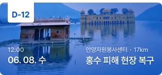
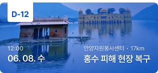

위용위용
위험할때 용이하게
당신을 지켜주는 재난정보 집약 서비스

BACKGROUND
재난, 그게 뭐죠?
상관없는 일이잖아요
현재 우리 사회에 만연한 안전불감증은 수많은 대형사고의 원인이 되고 있습니다.
재난을 미리 예방하지 못하면, 또한 이미 발생한 재난에 적절하게 대응하지 못하면
피해는 더욱 커지기 마련입니다. 그럼에도 불구하고 국민들의 재난 의식 수준은
여전히 무관심 수준에 가깝고, 그에 따른 정부의 대응책도 효과가 미비합니다.
그러나, 과연 재난이 우리와 멀리 떨어져 있는 이야기일까요?
3월은 임야 · 작업장 화재 가장 빈번…
지반침하 등 붕괴사고도 조심해야
소방재난본부, 화재 안전불감증 아파트·물류센터 등
소방시설법 위반 16.4% 이상 대거 적발
매일 울리는 재난알람… "미세먼지 심한 걸 누가 모르나"
"뜬금없는 문자에 새벽잠 깼다" 긴급재난문자 '남발' 비판
갑자기 뚝 끊긴 ‘코로나 발생 인원 재난 문자’...
당황한 시민들, 정보 부재 지적하면서 국민청원
거대한 자연재난 부터
내 주변 사회재난 까지
부엌을 태우는 화재와 거대한 산을 집어삼키는 산불, 출근길 교통사고와 세계를 뒤덮은 감염병 등
규모에 상관없이 당신을 혼란 속에 빠뜨리는 모든 상황이 바로 재난입니다. 이토록 다양한 상황에
딱 맞는 정보만을 취할 수 있는 재난 정보 집약 서비스를 기획했습니다.


PROJECT GOAL
위급할때 용이한
재난정보 집약 서비스
당신이 위험에 빠졌을 때 언제든지 도움을 구할 수 있도록,
더 나아가 각종 재난의 예방부터 복구까지 원활히 케어할 수 있도록
사용자와 사용자, 사용자와 전문 기관 사이를 이어 주는 서비스를 만들고자 합니다.
Get
Information
재난과 관련된 정보를 얻고
Chat
Each Other
주변의 이웃과 공유하며
Countract
Disaster
당신의 재난에 대응하고
Donation
&Valunteer
쉽게 도움을 줄 수 있는
OUR MISSION
사용자 맞춤 정보를 제공해
일상 속 재난을 예방하는
CONCEPT
우리는 위용위용입니다.
위급 시 울리는 경보 소리의 의성어이며, ‘위급할 때 용이하게’라는 슬로건의 줄임말인 위용위용은
어디 있든 알아차릴 수 있는 경보음처럼 재난 대응의 모든 과정을 집약하여 신속하게 제공합니다.
위용위용,
이렇게 이용해요!
SYMBOL MARK
사이렌의 형상을 기반으로, 다양한 색과 모양의 재난에도
빛처럼 빠르게 대응하겠다는 메시지를 담은 로고를 제작하였습니다.
위용위용
WEWOO
TYPOGRAPHY
정보를 효과적으로 전달할 수 있도록 가독성과 판독성이 좋은 프리텐다드를 사용하였습니다.
단단하고 직선적인 프리텐다드는 정직한 정보 전달, 진중한 무게감과 어울리는 서체입니다.
위급할 때 용이하게 Regular
재난의 모든 과정을 집약한 Medium
우리는 위용위용입니다 Semibold
COLOR
다양한 재난과 상황에 맞는 정보를 직관적으로 구분할 수 있도록 각 재난별 색상을 지정했으며
이를 제외한 색상으로는 Black과 White만을 사용해 가시성을 높이고, 침착한 분위기를 만들었습니다.
Burn Orange
#FF5000
Land Yellow
#FFCC00
Safety Green
#05AA5A
Water Blue
#0050C8
Accident Violet
#6400C8
General Black
#191919
Ordinary White
#FAFAFA
BADGE
위용위용에서의 활동을 통해 획득할 수 있는 뱃지는
심볼 마크와 같은 간단한 도형만을 사용해 디자인하였으며,
각 재난 및 활동을 연상시킵니다.
시켜줘 명예소방관
ICON
수많은 정보를 시각적으로 쉽게 분류할 수 있도록
직관적인 라인 아이콘을 사용했습니다.
SERVICE DESIGN
안녕하세요, 위용위용님
당신에 대해 알려주시겠어요?
가입 시에 간단한 관심설정을 통해 사용자 관심 설정을 할 수 있어요.
HOME
당신에게 필요한
재난 맞춤 정보를 제공해요
가입 시에 간단한 관심설정을 통해 사용자 관심 설정을 할 수 있어요.
한 눈에 관심 있는 카테고리를 확인할 수 있어요.
 

01
사용자 추천 정보
정부 지침, 오늘의 날씨, 최근 소식 등
나에게 맞는 정보를 편리하게 모아보아요
02
나의 후원 관리
그동안 후원한 금액, 기관, 누적횟수 등을
한눈에 파악할 수 있어요.
03
나의 봉사 관리
정부 지침, 오늘의 날씨, 최근 소식 등
나에게 맞는 정보를 편리하게 모아보아요
04
나의 이웃 관리
그동안 후원한 금액, 기관, 누적횟수 등을
한눈에 파악할 수 있어요.
POPUP & CHATTING
멀리 있어도 걱정 끝!
이웃의 안부를 확인해요
나의 이웃이 있는 지역에 재난이 발생하면 팝업 알림을 통해 확인할 수 있어요.
이웃에게 메시지를 보내 안부를 확인하고, 유용한 정보가 있다면 전해 주세요.
PREVENT
용품부터 요령까지
재난별 정보를 한 번에!
각종 재난과 관련된 정보를 손쉽게 찾아볼 수 있어요.
지역, 날씨 등 당신을 위한 맞춤 정보로 모든 재난에 대비하세요!
비가 자주 오는 요즘
꼭 알아둬야해요
비가 자주 오는 요즘
꼭 알아둬야해요
비가 자주 오는 요즘
꼭 알아둬야해요
비가 자주 오는 요즘
꼭 알아둬야해요

COMMUNICATE
우리 동네 주민과
함께 이야기해요
방금 그 소리가 궁금하다면, 실시간 정보가 필요하다면,
우리 동네 주민들이 이야기해 줄 거예요.
REPORT&
RECOMMEND
신뢰할 수 없는 정보는 신고하고,
유용한 정보는 추천함으로써 각 회원과
정보의 신뢰도를 쉽게 구분할 수 있어요.
MAP & RADIO
지도와 라디오로
현명하게 대피해요
재난 대피 시설과 이웃의 위치,
실시간 재난 현황을 확인할 수 있어요
통신망이 두절되어도
라디오 재난 방송을 청취할 수 있어요
SUPPORT
이재민들에게
희망을 보내요
미처 재난을 피하지 못한 이들이 내일로 다시 나아갈 수 있도록
당신의 도움이 필요한 곳에 희망을 보내 주세요.
DONATE
간단한 조작으로
필요한 도움만을
어떤 도움이 얼마만큼 필요한지 직관적으로 확인할 수 있어요.
간단한 터치와 서비스 내 결제를 통해 쉽게 후원해 보세요.
후원금 기부

구호물품 결제
구호물품 배송
VOLUNTEER
봉사 활동 신청도
쉽고 빠르게!
분야와 일정을 확인한 뒤 봉사 활동을 신청하면
기관과 직접 연락할 수 있어요.